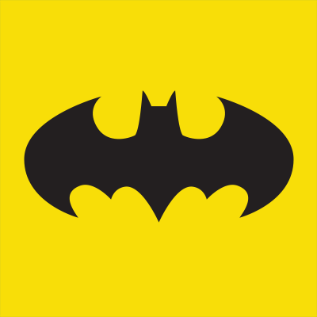
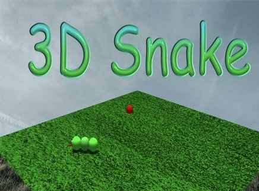

Entrer en contact
Au sein du Printemps, je suis responsable du suivi des commandes clients, de la réétiquetage des articles et de la création des nouvelles étiquettes. J'assure également la gestion des inventaires, ainsi que la réception et l'expédition des stocks de marchandises, en utilisant efficacement le logiciel SAP pour garantir une gestion optimale des flux de produits.
Lors de mon stage chez Benistudy, j'ai géré le réseau informatique, notamment la plateforme Google Workbench. J'ai mis en place un système d'autorisations et de restrictions d'accès pour les différents services (comptabilité, RH, direction, employés, etc.), en attribuant des droits spécifiques en fonction des postes et des responsabilités de chacun
En tant que technicien informatique, j'ai assuré l'installation des appareils iMac et des imprimantes, ainsi que la configuration des machines et des logiciels. J'étais également en charge de l'assistance technique auprès des employés, intervenant en cas de difficultés avec les équipements ou les logiciels.
Développement d'un jeu Snake 3D avec Unity et C# destiné à être utilisé par le personnel pendant les pauses. J'ai conçu et programmé l'ensemble du jeu, en intégrant des mécaniques adaptées pour offrir une expérience divertissante tout en optimisant les performances pour une utilisation sur divers appareils.

Creation d'un site pour décrire le Film Batman.

Création d'un jeu Snake en 3D avec Unity et C#, conçu pour les moments de pause du personnel. J'ai développé les fonctionnalités du jeu et veillé à sa compatibilité avec différents appareils, offrant ainsi une expérience ludique et fluide pour les utilisateurs
Simulation du réseau du université
Entrer en contact